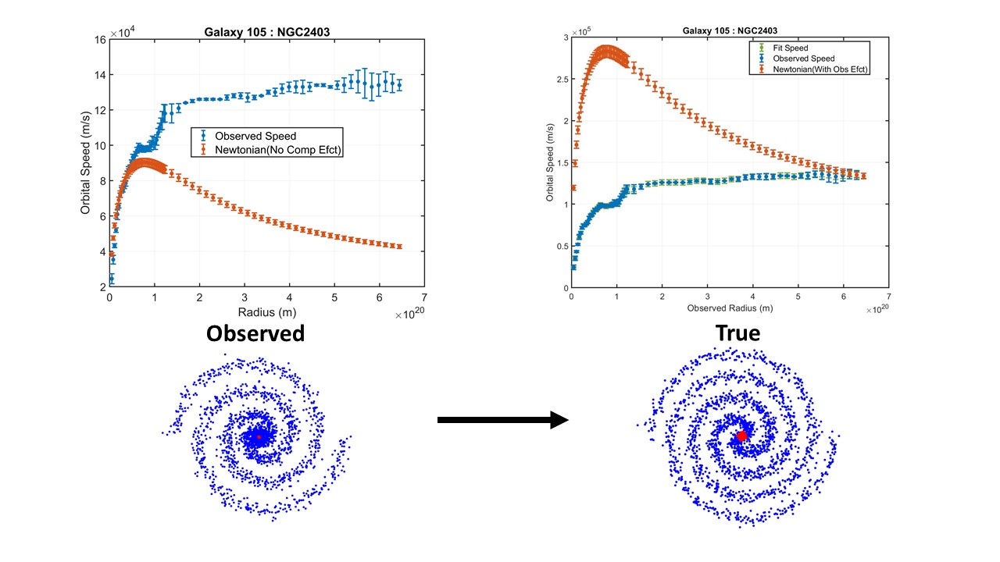
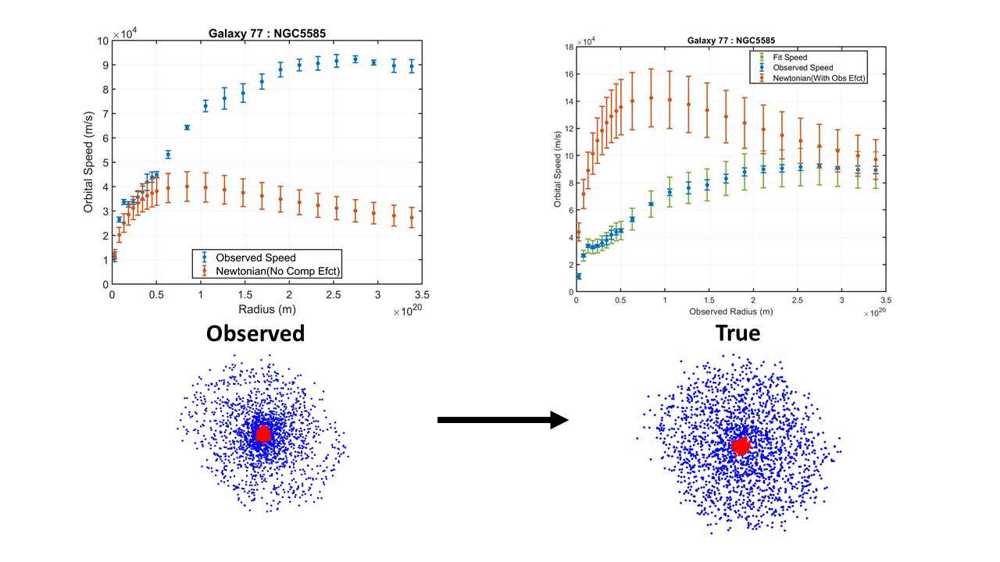

If an observational effect induces an apparent spatial compression of galaxies, it may account for the discrepancies in their observed orbital speeds. This study investigates whether the flat rotation curve arise from such an observational effect rather than requiring dark matter or modifications to gravity. Using an inverse problem approach, we demonstrate that Newtonian dynamics remain consistent with observed rotation curves when incorporating a radially dependent space scale factor that maps true spatial dimensions to observed ones. Analyzing 175 galaxies from the SPARC dataset, we find that the intrinsic curvature associated with this apparent compression exhibits a strong correlation with the Ricci curvature derived from the baryonic mass distribution.


Your review will be published along with your name, unless you request to remain anonymous.
Thoughtful feedback is welcome.